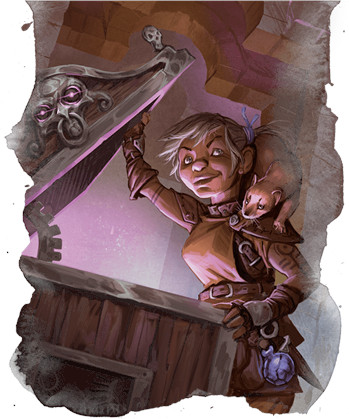

Voleur
Si vous souhaitez escalader facilement des bâtiments, crocheter des serrures à la vitesse de la lumière ou vous déplacer discrètement en vous tapissant dans l'ombre, l'archétype du voleur est ce que vous cherchez.
Capacités du voleur
La classe de roublard a une identité forte, ce qui signifie que la plupart de vos meilleures capacités proviendront directement de la classe de roublard, et non pas de votre sous-classe. Néanmoins, il est important de considérer les avantages que votre sous-classe vous apportera, même si cela sera tardivement. En effet, si vous gagnez la première au niveau 3, il vous faudra attendre ensuite les niveaux 13 et 17. En résumé, ces capacités de sous-classe permettent :
- De faire les poches, crocheter une serrure ou désarmer les pièges en un clin d'œil.
- De grimper rapidement très haut et de sauter loin, comme du toit d'un bâtiment à un autre.
- De vous faufiler très discrètement en vous déplaçant lentement.
- D'utiliser des objets magiques en évitant les restrictions de classe, de race ou de niveau.
- D'effectuer deux actions lors du premier tour d'un combat.
Avantages du voleur
L’archétype du voleur est l'incarnation la plus emblématique du roublard, et toutes ses capacités permettent de renforcer les talents du roublard. Vos compétences en pickpocket, crochetage et désamorçage s'améliorent toutes au fur et à mesure que vous progressez avec cet archétype, tout comme vos talents acrobatiques façon Assassin's Creed. Toutes ces compétences font de vous un meilleur roublard, mais la véritable force de l'archétype du voleur réside dans la facilité avec laquelle il introduit de nouveaux joueurs à D&D.
Les premières capacités de cette sous-classe sont des améliorations simples et passives à ce que le roublard sait faire. Elles augmentent la longueur de vos sauts, permettent de grimper deux fois plus vite ou de réaliser des actions de roublard, comme crocheter une serrure, au prix d'une action bonus au lieu d'une action. Lorsque vous atteignez les niveaux intermédiaires du jeu, vos capacités ne sont encore que des améliorations de vos compétences de base, mais vous devez maintenant agir de manière délibérée pour tirer des avantages. Par exemple, vous devez choisir de ne vous déplacer que de la moitié de votre vitesse si vous voulez utiliser Discrétion suprême.
Enfin, lorsque vous atteignez les niveaux les plus élevés, vous accédez à des capacités qui vous encouragent à planifier et à élaborer des stratégies. Quelles synergies inhabituelles pouvez-vous créer avec des objets magiques que vous n’êtes pas censés pouvoir utiliser ? Que pouvez-vous faire lors du premier round d'un combat si vous avez deux tours à jouer au lieu d'un seul ? L'archétype du voleur vous apprendra à être un joueur de D&D plus intelligent et tactique, débutant par des traits passifs simples et faciles à maîtriser pour ensuite passer finalement à des capacités approfondies et stratégiques. C'est pourquoi il est recommandé à tous les MD d'encourager au moins un de leurs nouveaux joueurs à jouer un roublard avec l'archétype du voleur.
Inconvénients du voleur
Un inconvénient de cette approche d'apprentissage par le jeu est qu'elle laissera les joueurs vétérans perplexes sur plus ou moins les dix premiers niveaux. Le voleur n’est pas mécaniquement un mauvais archétype (il est au contraire plutôt puissant dans son créneau) mais il n'est pas vraiment riche en choix. Les lanceurs de sorts, comme les clercs et les magiciens, ont déjà au niveau 3 accès à une grande variété de sorts, alors que les roublards de l'archétype voleur n’ont que des améliorations passives de leurs traits existants.
Si vous tenez jusqu'aux niveaux supérieurs, votre capacité à prendre des décisions actives et tactiques augmentera grandement, mais combien de campagnes vont vraiment jusqu'au niveau 13, ou mieux encore au niveau 17 ? Si vous voulez prendre des décisions et jouer activement un scélérat à l’esprit vif, il existe d’autres archétypes de roublard. Le mortel et secret assassin du Manuel des Joueurs, ou le conspirateur et le bretteur, tous deux issus du Xanathar’s Guide to Everything, viennent immédiatement à l’esprit.
Exemple de personnage
Si vous jouez un roublard de niveau 1, gardez à l'esprit que vous ne pourrez pas choisir votre archétype avant le niveau 3, et utilisez ce temps pour déterminer le rôle que vous souhaitez jouer dans votre groupe. Un cambrioleur sournois et indépendant qui soutient le groupe dans et hors des combats ? Un assassin ténébreux et destructeur ? Ou peut-être un filou illusionniste porté sur la magie ? Mais peu importe la voie que vous emprunterez, vous devrez avant tout être un bon roublard.
Choisissez une race qui améliore votre Dextérité et votre Sagesse ou votre Intelligence. La Dextérité est importante pour les roublards car elle aide à vous cacher, à crocheter les serrures, à effectuer des tours de passe-passe et à utiliser des armes de finesse et à distance. La Sagesse aide à percevoir le danger et à rompre les enchantements, tandis que l'Intelligence est essentielle pour déduire l'emplacement de portes secrètes, d'objets cachés ou de pièges. Les hauts elfes et les elfes des bois font d'excellents roublards, car tous les elfes ont un bonus important en Dextérité, et un bonus plus faible en Sagesse ou en Intelligence suivant la sous-race. Les halfelins pied-légers (et dans une moindre mesure les robustes) sont parfaits pour des roublards agiles et perspicaces, le meilleur exemple de cela étant Bilbo Baggins. La Force et le Charisme ne vous sont d'aucune utilité, alors que la Constitution est importante pour tous les personnages. Heureusement, vous utiliserez la plupart du temps votre Ruse pour entrer ou sortir d'un combat, mais un peu plus de Constitution ne fait pas de mal. Avoir un peu plus de points de vie que le roublard moyen vous aidera à encaisser un coup dans les rares occasions où vous n'aurez pas réussi à vous enfuir au beau milieu d'un combat.
Comme d'habitude, le background de votre personnage dépend de vous. Vous pouvez créer toutes sortes d'histoires intéressantes et de personnages bizarres en associant des historiques improbables tels qu'acolyte ou sage à la classe de roublard qui est typiquement sournoise et secrète, ou opter pour un choix plus classique comme enfant des rues ou criminel.
Pour l'équipement, si vous avez l'intention de vous battre au corps à corps, choisissez une épée courte maintenant et… une autre épée courte au lieu d'un arc court ! Vous pouvez vous battre avec ces deux épées, ce qui donne plus de possibilités de toucher un ennemi et d'infliger des dégâts importants avec Attaque sournoise. Si vous avez l’intention de rester à l'abri du danger et de ne combattre que de loin, prenez une rapière et un arc court. Un sac de cambrioleur vous sera finalement essentiel.
Expertise
Une partie importante de la création d'un voleur entre en jeu dès le niveau 1, lorsque vous obtenez la capacité Expertise. En résumé, vous devrez choisir deux compétences ou une seule et les outils des voleurs. À partir de là, vous ajoutez DEUX fois votre bonus de maîtrise à tout jet effectué avec ces compétences ou outils, au lieu de ne l'ajouter qu'une seule fois. La capacité cite explicitement les outils de voleurs, comme pour signaler qu'il est extrêmement important d'acquérir leur expertise. Et cela l'est, car en tant que voleur vous allez passer votre vie à crocheter des serrures et désarmer des pièges. Maîtriser les outils de voleurs est la meilleure façon de le faire.
En tant que personnage sournois, acquérir une expertise dans la compétence Discrétion est également d'une importance capitale. Cependant, lorsque vous gagnez l'expertise dans deux autres compétences au niveau 6, vous devriez vous sentir libre et un peu plus dans le rôle pour vos choix. Réfléchissez aux compétences que votre personnage a réellement utilisées au cours de ses aventures et développez l'expertise dans celles qui définissent réellement vos expériences !
Dons
En tant que roublard, vous allez probablement vouloir utiliser vos Améliorations de caractéristique (que vous gagnez au niveau 4 puis tous les quatre niveaux par la suite) pour maximiser votre Dextérité le plus vite possible. Cependant, si vous atteignez le niveau 4 et estimez que vous êtes suffisamment sournois comme cela, choisir un don peut vous aider à obtenir des options tactiques supplémentaires que l'archétype de voleur ne propose pas à bas niveaux. Par exemple :
Maître-arbalétrier permet de combattre de loin comme un maître, avec deux arbalètes, tout en ignorant un désavantage qui annulerait votre Attaque sournoise lorsque vous tirez en étant au contact d'une créature hostile.
Soigneur permet de gagner beaucoup de temps avec une trousse de soins, et avec en plus Mains lestes vous permet d'utiliser un objet comme cette trousse de soins avec une action bonus...
Lanceur de rituels vous permet d'accéder facilement au sort appel de familier. Or avoir un petit partenaire de crimes magique est une idée géniale, et aussi un moyen facile d'obtenir un avantage, et donc une Attaque sournoise, à chaque tour.
Discret est un don intéressant pour tout personnage qui veut être... discret, et tous les voleurs veulent être discrets.
Basé sur un article de James Haeck, traduit par blueace